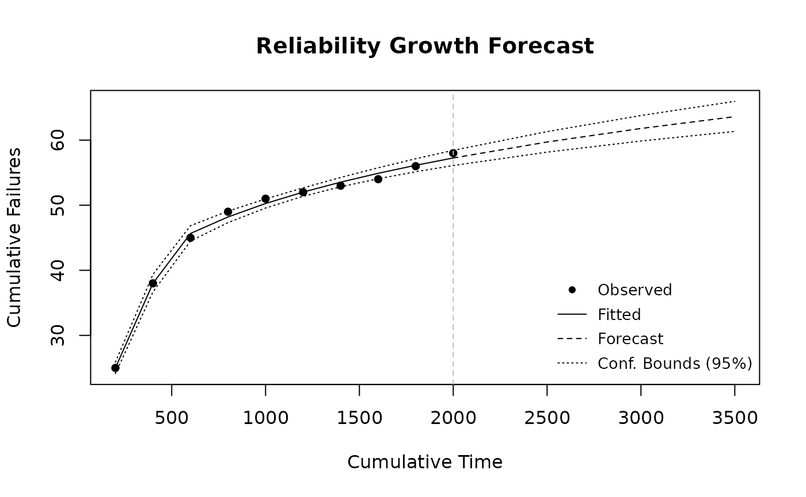
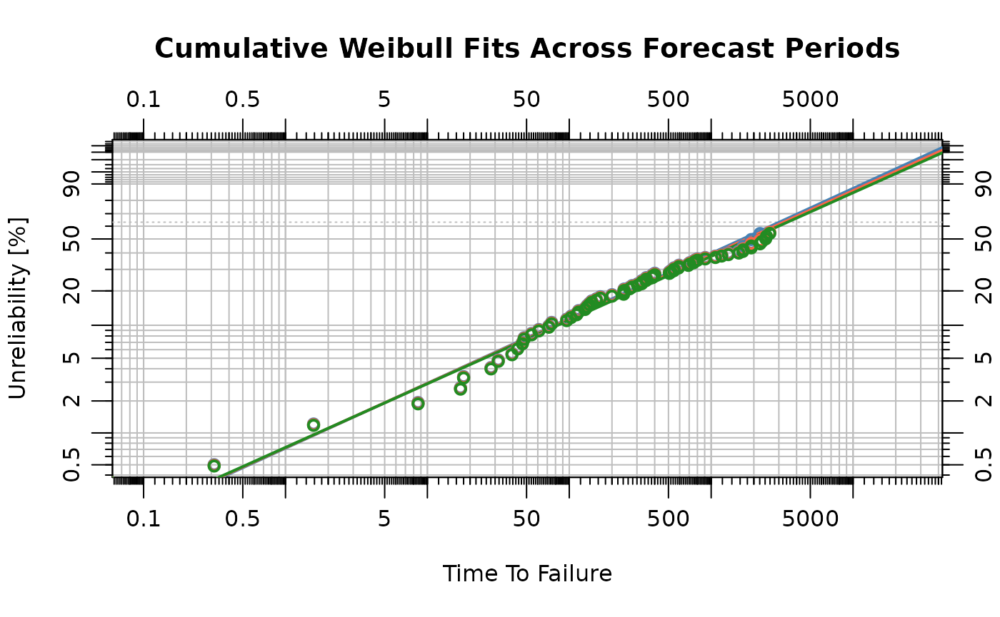
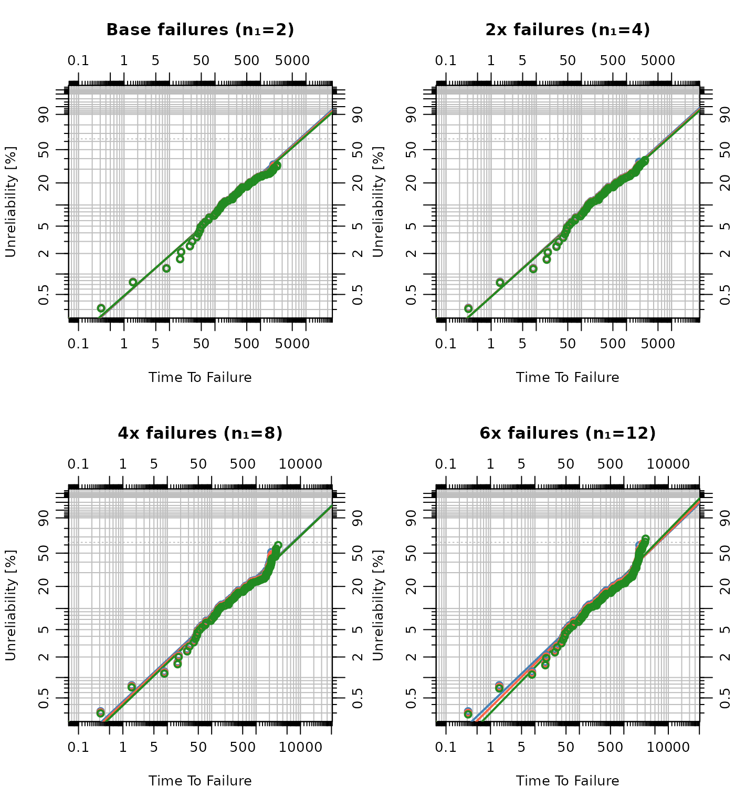
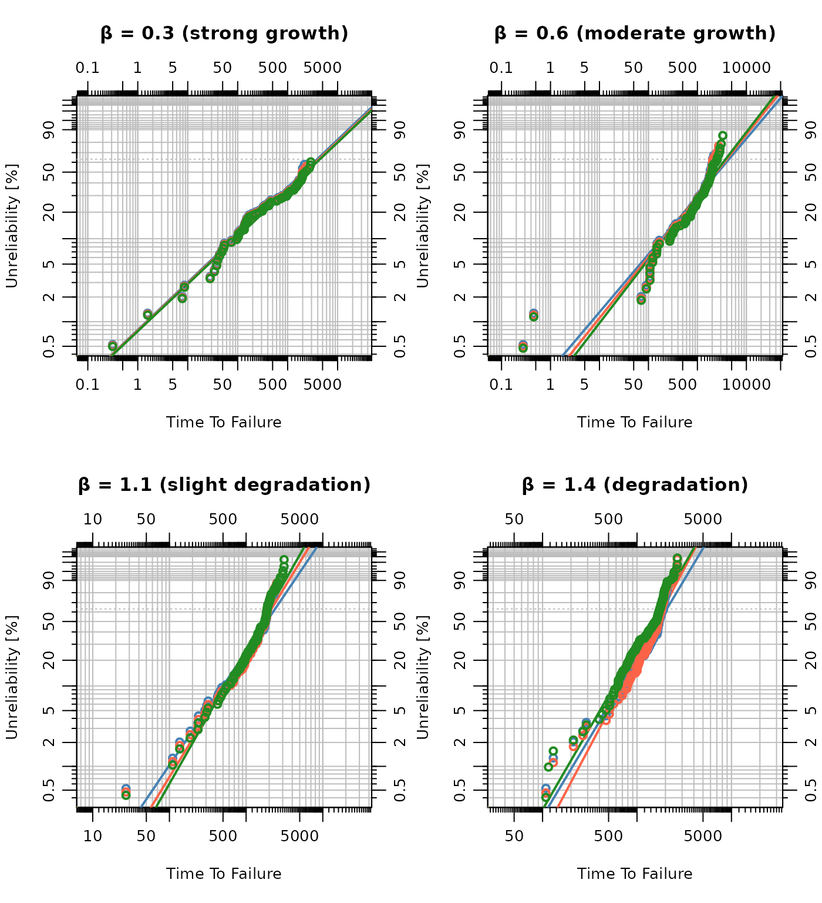
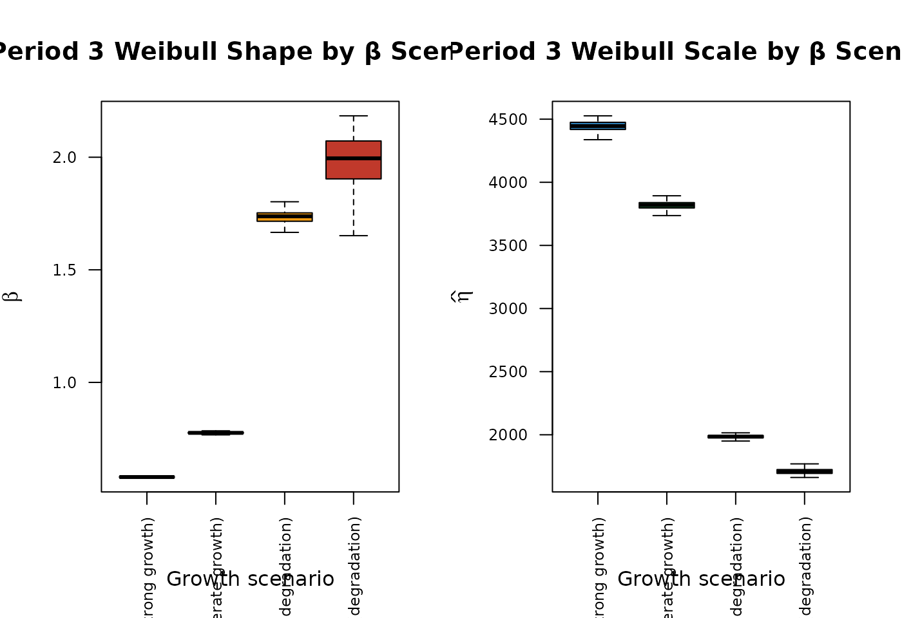

Introduction
Reliability Growth Analysis (RGA) tracks how a system’s failure rate improves over development and testing. Fitting a model to historical interval data allows extrapolation of the trend forward, forecasting the number of additional failures expected in a future operating window. Combined with a fleet of units currently at risk, the forecast drives a simulation of which units fail and when, producing a dataset suitable for life distribution estimation.
Reliability Growth Analysis
The Crow-AMSAA model assumes the cumulative failure count follows a power-law process: . A growth parameter indicates that failures are becoming less frequent over time (reliability improvement).
The analysis begins by defining the interval end-times and the number of failures observed in each interval. A ten-interval test spanning 2000 cumulative operating units shows a clear downward trend in failures per interval:
The model is fitted with rga():
fit <- rga(times, failures, model_type = "Piecewise NHPP")The fitted reliability growth model is plotted against the observed data:
plot(fit,
main = "Reliability Growth Analysis",
xlab = "Cumulative Time", ylab = "Cumulative Failures"
)
The estimated growth parameter (beta): 0.188
The cumulative operating time at the end of the test is 2000 units.
The total number of observed failures is sum(failures) =
58. The fitted
confirms reliability is improving over the course of the test.
Reliability Growth Forecasting
The predict_rga() function extrapolates the fitted model
beyond the test data. The following forecast covers three consecutive
500-unit periods immediately following the test end at
:
| Period | Cumulative time span |
|---|---|
| 1 | 2000 – 2500 |
| 2 | 2500 – 3000 |
| 3 | 3000 – 3500 |
Equal-width periods allow direct comparison: if reliability is growing, each successive period is expected to yield fewer failures. The cumulative time boundaries for the forecast periods are defined and the cumulative failure forecast is generated at those boundaries:
boundaries <- c(2000, 2500, 3000, 3500)
fc <- predict_rga(fit, boundaries)
plot(fc,
main = "Reliability Growth Forecast",
xlab = "Cumulative Time", ylab = "Cumulative Failures"
)
The incremental failures expected in each period are obtained by taking the difference between the cumulative forecast at successive boundaries:
n_p1 <- round(fc$cum_failures[2] - fc$cum_failures[1])
n_p2 <- round(fc$cum_failures[3] - fc$cum_failures[2])
n_p3 <- round(fc$cum_failures[4] - fc$cum_failures[3])
cat(
"Predicted failures — Period 1:", n_p1,
" Period 2:", n_p2,
" Period 3:", n_p3, "\n"
)Predicted failures — Period 1: 2 Period 2: 2 Period 3: 2
Each predicted count indicates how many new failures to inject into the fleet simulation for that period. The predicted interval failure counts serve as the injection rate for the fleet simulation below.
Stochastic Fleet Simulation
The forecasted failure counts drive a stochastic simulation of
individual unit failures. The sim_failures() function
implements a stochastic assignment process that mimics field failure
occurrence. Units are selected for failure using probability
proportional to size (PPS) sampling: units with longer accumulated
runtimes have a proportionally higher probability of being chosen.
Failure event times are drawn from
runtime + Uniform(0, window) and surviving units are
right-censored at runtime + window.
Suppose a fleet of 40 units is currently in service, with accumulated runtimes spanning roughly 500 to 2000 operating units, which forms the at-risk population:
Period 1 Simulation
The Period 1 simulation injects n_p1 failures into the
40-unit fleet over a 500-unit observation window:
result_p1 <- sim_failures(n_p1, runtimes, window = 500)
knitr::kable(head(result_p1), caption = "Simulated failures and suspensions for Period 1")| index | runtime | type |
|---|---|---|
| 1 | 1023.000 | Suspension |
| 2 | 1048.000 | Suspension |
| 3 | 1145.000 | Suspension |
| 4 | 1164.000 | Suspension |
| 16 | 1185.632 | Failure |
| 5 | 1196.000 | Suspension |
Period 2 Simulation
For Period 2, surviving units from Period 1 each accumulate an additional 500 units of operating time. Each failed unit is replaced by a new unit (starting runtime = 1), keeping the at-risk population roughly constant. The replacement units contribute suspension observations at the end of the window if they do not fail, anchoring the left tail of the life distribution estimate:
survivors_p1 <- result_p1$index[result_p1$type == "Suspension"]
n_fail_p1 <- sum(result_p1$type == "Failure")
runtimes_p2 <- c(runtimes[survivors_p1] + 500, rep(1, n_fail_p1))
result_p2 <- sim_failures(n_p2, runtimes_p2, window = 500)Period 3 Simulation
The same runtime-advance and replacement logic applies after Period 2:
survivors_p2 <- result_p2$index[result_p2$type == "Suspension"]
n_fail_p2 <- sum(result_p2$type == "Failure")
runtimes_p3 <- c(runtimes_p2[survivors_p2] + 500, rep(1, n_fail_p2))
result_p3 <- sim_failures(n_p3, runtimes_p3, window = 500)Parametric Life Distribution Estimation
A Weibull distribution is fitted to the combined failure and suspension data from each period. To supplement the stochastic simulation results, approximate individual failure times are generated from the historical interval failure counts, and the fleet runtimes are included as right-censored observations. The combined dataset includes historical test failures, fleet runtimes, and simulated events. Each Weibull fit is a cumulative update: Period 2 incorporates all failure events observed through Period 1 plus the new Period 2 failures, with right-censoring at the end of the current window. This approach mirrors standard practice, updating the life distribution estimate as new data arrive over time.
# Generate approximate failure times from interval counts
interval_ends <- cumsum(times)
interval_starts <- c(0, interval_ends[-length(interval_ends)])
hist_fail_times <- sort(unlist(mapply(function(start, end, n) {
if (n > 0) runif(n, start, end) else numeric(0)
}, interval_starts, interval_ends, failures)))
# Extract events by type from each period
fail_p1 <- result_p1$runtime[result_p1$type == "Failure"]
susp_p1 <- result_p1$runtime[result_p1$type == "Suspension"]
fail_p2 <- result_p2$runtime[result_p2$type == "Failure"]
susp_p2 <- result_p2$runtime[result_p2$type == "Suspension"]
fail_p3 <- result_p3$runtime[result_p3$type == "Failure"]
susp_p3 <- result_p3$runtime[result_p3$type == "Suspension"]
# Period 1: historical + simulated failures; fleet runtimes + simulated suspensions
obj_p1 <- wblr(c(hist_fail_times, fail_p1), c(runtimes, susp_p1),
col = "steelblue", label = "Period 1", is.plot.cb = FALSE
)
obj_p1 <- wblr.fit(obj_p1)
# Period 2: cumulative failures through P2; fleet runtimes + P2 suspensions
obj_p2 <- wblr(c(hist_fail_times, fail_p1, fail_p2), c(runtimes, susp_p2),
col = "tomato", label = "Period 2", is.plot.cb = FALSE
)
obj_p2 <- wblr.fit(obj_p2)
# Period 3: cumulative failures through P3; fleet runtimes + P3 suspensions
obj_p3 <- wblr(c(hist_fail_times, fail_p1, fail_p2, fail_p3), c(runtimes, susp_p3),
col = "forestgreen", label = "Period 3", is.plot.cb = FALSE
)
obj_p3 <- wblr.fit(obj_p3)All three fitted lines are overlaid on a single Weibull probability plot. As reliability grows, the fitted line shifts rightward, indicating a longer characteristic life:
plot.wblr(list(obj_p1, obj_p2, obj_p3),
main = "Cumulative Weibull Fits Across Forecast Periods",
is.plot.legend = FALSE
)
Summary: Weibull Parameters Across Periods
The estimated shape () and scale () parameters from each fitted object are compiled into a summary table:
cum_failures <- cumsum(lengths(list(fail_p1, fail_p2, fail_p3)))
params <- data.frame(
Period = c("Period 1", "Period 2", "Period 3"),
Cumul_Failures = cum_failures,
Beta = round(c(
obj_p1$fit[[1]]$beta,
obj_p2$fit[[1]]$beta,
obj_p3$fit[[1]]$beta
), 3),
Eta = round(c(
obj_p1$fit[[1]]$eta,
obj_p2$fit[[1]]$eta,
obj_p3$fit[[1]]$eta
), 1)
)
knitr::kable(params,
caption = "Cumulative Weibull parameters by forecast period",
col.names = c("Period", "Cumul. Failures", "Shape (\u03b2)", "Scale (\u03b7)"),
row.names = FALSE
)| Period | Cumul. Failures | Shape (β) | Scale (η) |
|---|---|---|---|
| Period 1 | 2 | 0.616 | 3022.1 |
| Period 2 | 4 | 0.609 | 3241.2 |
| Period 3 | 6 | 0.603 | 3451.4 |
With each update, the estimate is based on more failure events, reducing uncertainty. The rightward shift of scale across periods reflects the reduced failure intensity predicted by the growth model, units are lasting longer as the system matures.
Reliability Metrics
The Weibull parameters translate into two common reliability metrics: the mean time between failures (MTBF) and the reliability at a fixed mission time. MTBF for a Weibull distribution is , and reliability at time is .
weibull_metrics <- function(obj, t) {
b <- obj$fit[[1]]$beta
e <- obj$fit[[1]]$eta
mtbf <- e * gamma(1 + 1 / b)
rt <- exp(-(t / e)^b)
c(MTBF = round(mtbf, 1), Reliability = round(rt, 3))
}
t_mission <- 1500 # target mission time (operating units)
metrics <- data.frame(
Period = c("Period 1", "Period 2", "Period 3"),
t(sapply(list(obj_p1, obj_p2, obj_p3), weibull_metrics, t = t_mission))
)
knitr::kable(metrics,
caption = paste0(
"MTBF and reliability at t = ", t_mission,
" operating units by forecast period"
),
col.names = c("Period", "MTBF", paste0("R(", t_mission, ")")),
row.names = FALSE
)| Period | MTBF | R(1500) |
|---|---|---|
| Period 1 | 4400.7 | 0.522 |
| Period 2 | 4785.0 | 0.535 |
| Period 3 | 5154.2 | 0.546 |
A rising MTBF and reliability across periods confirms that the reliability growth signal detected in testing carries through to the fleet simulation.
Monte Carlo Uncertainty Analysis
A single run of sim_failures() represents one
realization of the stochastic assignment process. Uncertainty in
and
attributable to randomness in failure assignment is quantified by
repeating all three simulation periods from the same initial fleet
state, yielding a collection of Weibull parameter estimates whose spread
measures sampling variability.
Run the Monte Carlo Loop
Each iteration re-simulates all three periods and fits a cumulative
Weibull model for each period. The historical failure times and fleet
runtimes are included alongside the simulation data in each fit.
Parameters are stored in a long-format data frame. Iterations yielding
fewer than two failures in a given period are excluded from that
period’s fit by design; errors are suppressed via
tryCatch.
set.seed(99)
n_sim <- 200
mc_list <- vector("list", n_sim)
for (i in seq_len(n_sim)) {
tryCatch(
{
# Period 1
r1 <- sim_failures(n_p1, runtimes, window = 500)
f1 <- r1$runtime[r1$type == "Failure"]
s1 <- r1$runtime[r1$type == "Suspension"]
# Period 2 — survivors advance; failed units replaced by new units (runtime = 1)
surv1 <- r1$index[r1$type == "Suspension"]
rt2 <- c(runtimes[surv1] + 500, rep(1, sum(r1$type == "Failure")))
r2 <- sim_failures(n_p2, rt2, window = 500)
f2 <- r2$runtime[r2$type == "Failure"]
s2 <- r2$runtime[r2$type == "Suspension"]
# Period 3 — survivors advance; failed units replaced by new units (runtime = 1)
surv2 <- r2$index[r2$type == "Suspension"]
rt3 <- c(rt2[surv2] + 500, rep(1, sum(r2$type == "Failure")))
r3 <- sim_failures(n_p3, rt3, window = 500)
f3 <- r3$runtime[r3$type == "Failure"]
s3 <- r3$runtime[r3$type == "Suspension"]
# Cumulative failure and suspension sets including historical + fleet data
cum_fail <- list(
c(hist_fail_times, f1),
c(hist_fail_times, f1, f2),
c(hist_fail_times, f1, f2, f3)
)
susp_set <- list(
c(runtimes, s1),
c(runtimes, s2),
c(runtimes, s3)
)
rows <- lapply(1:3, function(p) {
if (length(cum_fail[[p]]) < 2) {
return(NULL)
}
obj <- wblr(cum_fail[[p]], susp_set[[p]], is.plot.cb = FALSE)
obj <- wblr.fit(obj)
data.frame(
sim = i,
period = paste0("Period ", p),
beta = obj$fit[[1]]$beta,
eta = obj$fit[[1]]$eta
)
})
mc_list[[i]] <- do.call(rbind, Filter(Negate(is.null), rows))
},
error = function(e) NULL
)
}
mc_df <- do.call(rbind, Filter(Negate(is.null), mc_list))Visualize the Parameter Distributions
Histograms of (shape) and (scale) for each period show how the fitted parameters vary across simulations. The dashed vertical line marks the median; the solid vertical line marks the single-run point estimate from the previous section. A density curve is overlaid to highlight the distributional shape.
# Single-run point estimates for reference
single_beta <- c(obj_p1$fit[[1]]$beta, obj_p2$fit[[1]]$beta, obj_p3$fit[[1]]$beta)
single_eta <- c(obj_p1$fit[[1]]$eta, obj_p2$fit[[1]]$eta, obj_p3$fit[[1]]$eta)
cols <- c("steelblue", "tomato", "forestgreen")
par(mfrow = c(2, 3), mar = c(4, 4, 3, 1))
for (p in 1:3) {
sub <- mc_df[mc_df$period == paste0("Period ", p), ]
b <- sub$beta[!is.na(sub$beta)]
h <- hist(b,
breaks = "Sturges", col = cols[p], border = "white",
main = paste0("Period ", p, " \u2014 Shape (\u03b2)"),
xlab = expression(hat(beta)), ylab = "Count", freq = TRUE
)
# density scaled to count axis
dens <- density(b)
scale_factor <- length(b) * diff(h$breaks[1:2])
lines(dens$x, dens$y * scale_factor, lwd = 2)
abline(v = median(b), lty = 2, lwd = 2)
abline(v = single_beta[p], lty = 1, lwd = 2, col = "black")
}
for (p in 1:3) {
sub <- mc_df[mc_df$period == paste0("Period ", p), ]
e <- sub$eta[!is.na(sub$eta)]
h <- hist(e,
breaks = "Sturges", col = cols[p], border = "white",
main = paste0("Period ", p, " \u2014 Scale (\u03b7)"),
xlab = expression(hat(eta)), ylab = "Count", freq = TRUE
)
dens <- density(e)
scale_factor <- length(e) * diff(h$breaks[1:2])
lines(dens$x, dens$y * scale_factor, lwd = 2)
abline(v = median(e), lty = 2, lwd = 2)
abline(v = single_eta[p], lty = 1, lwd = 2, col = "black")
}
The solid line (single-run estimate) and dashed line (MC median) are expected to align closely. Any gap reflects sampling variability in that single realization.
Monte Carlo Summary Table
Median, mean, and 95% central intervals across all valid simulations are presented below. Skewed parameter distributions show a mean that differs noticeably from the median.
mc_summary <- do.call(rbind, lapply(1:3, function(p) {
sub <- mc_df[mc_df$period == paste0("Period ", p), ]
b <- sub$beta[!is.na(sub$beta)]
e <- sub$eta[!is.na(sub$eta)]
data.frame(
Period = paste0("Period ", p),
Valid = length(b),
Pct_valid = paste0(round(100 * length(b) / n_sim), "%"),
Beta_mean = round(mean(b), 3),
Beta_med = round(median(b), 3),
Beta_lo = round(quantile(b, 0.025), 3),
Beta_hi = round(quantile(b, 0.975), 3),
Eta_mean = round(mean(e), 1),
Eta_med = round(median(e), 1),
Eta_lo = round(quantile(e, 0.025), 1),
Eta_hi = round(quantile(e, 0.975), 1)
)
}))
knitr::kable(mc_summary,
caption = "Monte Carlo summary: mean, median and 95% central interval (200 simulations)",
col.names = c(
"Period", "Valid", "%",
"Mean \u03b2", "Med. \u03b2", "2.5% \u03b2", "97.5% \u03b2",
"Mean \u03b7", "Med. \u03b7", "2.5% \u03b7", "97.5% \u03b7"
),
row.names = FALSE
)| Period | Valid | % | Mean β | Med. β | 2.5% β | 97.5% β | Mean η | Med. η | 2.5% η | 97.5% η |
|---|---|---|---|---|---|---|---|---|---|---|
| Period 1 | 200 | 100% | 0.616 | 0.616 | 0.615 | 0.619 | 3016.4 | 3025.0 | 2955.9 | 3042.3 |
| Period 2 | 200 | 100% | 0.610 | 0.610 | 0.608 | 0.615 | 3211.8 | 3222.3 | 3088.2 | 3264.2 |
| Period 3 | 200 | 100% | 0.604 | 0.604 | 0.601 | 0.609 | 3432.0 | 3435.1 | 3313.1 | 3508.8 |
Wider intervals in Period 1 reflect the small number of simulated failures; as failures accumulate across periods, the estimates stabilize and the intervals narrow. A rightward shift in the median across periods is the Monte Carlo analogue of the point-estimate shift seen in the single-run summary, now expressed as a full distribution rather than a scalar. Iterations with fewer than two failures in a period are excluded from that period’s fit. The “%” column shows how often a valid fit was obtained.
Sensitivity Analysis
The preceding Monte Carlo analysis fixes the growth model parameters. This section varies the growth model forecast in two ways: by scaling the predicted failure counts and by adjusting the growth parameter . The resulting Weibull fits reveal how the life distribution estimate responds to changes in the growth model forecast.
# Helper: run all three periods in one call; failed units are replaced by new
# units (runtime = 1), keeping the at-risk population roughly constant.
run_three_periods <- function(n_vec, runtimes, window = 500) {
r1 <- sim_failures(n_vec[1], runtimes, window = window)
surv1 <- r1$index[r1$type == "Suspension"]
n_fail1 <- sum(r1$type == "Failure")
rt2 <- c(runtimes[surv1] + window, rep(1, n_fail1))
if (length(rt2) < 2) stop("insufficient units after Period 1")
r2 <- sim_failures(min(n_vec[2], length(rt2) - 1), rt2, window = window)
surv2 <- r2$index[r2$type == "Suspension"]
n_fail2 <- sum(r2$type == "Failure")
rt3 <- c(rt2[surv2] + window, rep(1, n_fail2))
if (length(rt3) < 2) stop("insufficient units after Period 2")
r3 <- sim_failures(min(n_vec[3], length(rt3) - 1), rt3, window = window)
list(r1 = r1, r2 = r2, r3 = r3, rt2 = rt2, rt3 = rt3)
}
cols3 <- c("steelblue", "tomato", "forestgreen")Effect of Number of Failures
More observed failures provide denser information for fitting the Weibull distribution. Four multipliers are applied to the base predicted failure counts, spanning a wide range to expose how sample size affects parameter precision. A larger fleet of 80 units is used here so that even the highest failure counts do not deplete the at-risk population before Period 3.
| Label | Multiplier | ~Period 1 failures |
|---|---|---|
| Base | 1× | 2 |
| 2× | 2× | ~4 |
| 4× | 4× | ~8 |
| 6× | 6× | ~12 |
set.seed(7)
n_sim_sens <- 200
runtimes_fail <- sort(sample(500:2000, 80, replace = FALSE))
fail_scenarios <- list(
Base = c(n_p1, n_p2, n_p3),
`2x` = pmax(round(c(n_p1, n_p2, n_p3) * 2), 1),
`4x` = pmax(round(c(n_p1, n_p2, n_p3) * 4), 1),
`6x` = pmax(round(c(n_p1, n_p2, n_p3) * 6), 1)
)
# Cap at fleet size - 1 to prevent over-sampling
fail_scenarios <- lapply(fail_scenarios, function(ns) pmin(ns, length(runtimes_fail) - 1))
set.seed(42)
par(mfrow = c(2, 2), mar = c(4, 4, 3, 1))
for (sc_name in names(fail_scenarios)) {
tryCatch({
ns <- fail_scenarios[[sc_name]]
n1 <- ns[1]; n2 <- ns[2]; n3 <- ns[3]
rt <- runtimes_fail
res <- run_three_periods(c(n1, n2, n3), rt)
f1 <- res$r1$runtime[res$r1$type == "Failure"]
s1 <- res$r1$runtime[res$r1$type == "Suspension"]
f2 <- res$r2$runtime[res$r2$type == "Failure"]
s2 <- res$r2$runtime[res$r2$type == "Suspension"]
f3 <- res$r3$runtime[res$r3$type == "Failure"]
s3 <- res$r3$runtime[res$r3$type == "Suspension"]
o1 <- wblr(c(hist_fail_times, f1), c(runtimes_fail, s1),
col = cols3[1], label = "Period 1", is.plot.cb = FALSE)
o1 <- wblr.fit(o1)
o2 <- wblr(c(hist_fail_times, f1, f2), c(runtimes_fail, s2),
col = cols3[2], label = "Period 2", is.plot.cb = FALSE)
o2 <- wblr.fit(o2)
o3 <- wblr(c(hist_fail_times, f1, f2, f3), c(runtimes_fail, s3),
col = cols3[3], label = "Period 3", is.plot.cb = FALSE)
o3 <- wblr.fit(o3)
plot.wblr(list(o1, o2, o3), main = paste0(sc_name, " failures (n\u2081=", n1, ")"),
is.plot.legend = FALSE)
}, error = function(e) {
plot.new()
title(main = paste0(sc_name, "\n(insufficient survivors)"))
})
}
A Monte Carlo analysis of 200 iterations per failure scenario collects and for the cumulative Period 3 fit:
set.seed(456)
fail_mc_list <- lapply(names(fail_scenarios), function(sc_name) {
ns <- fail_scenarios[[sc_name]]
n1 <- ns[1]; n2 <- ns[2]; n3 <- ns[3]
rows <- lapply(seq_len(n_sim_sens), function(i) {
tryCatch({
res <- run_three_periods(c(n1, n2, n3), runtimes_fail)
f1 <- res$r1$runtime[res$r1$type == "Failure"]
f2 <- res$r2$runtime[res$r2$type == "Failure"]
f3 <- res$r3$runtime[res$r3$type == "Failure"]
s3 <- res$r3$runtime[res$r3$type == "Suspension"]
cum_f3 <- c(hist_fail_times, f1, f2, f3)
if (length(cum_f3) < 2) return(NULL)
obj <- wblr(cum_f3, c(runtimes_fail, s3), is.plot.cb = FALSE)
obj <- wblr.fit(obj)
data.frame(scenario = sc_name, beta = obj$fit[[1]]$beta, eta = obj$fit[[1]]$eta)
}, error = function(e) NULL)
})
do.call(rbind, Filter(Negate(is.null), rows))
})
names(fail_mc_list) <- names(fail_scenarios)
fail_mc_df <- do.call(rbind, fail_mc_list)
fail_mc_df$scenario <- factor(fail_mc_df$scenario, levels = names(fail_scenarios))
fail_cols <- c("#F9E79F", "#F8C471", "#EB984E", "#E74C3C")
par(mfrow = c(1, 2))
boxplot(beta ~ scenario, data = fail_mc_df,
xlab = "Failure scenario", ylab = expression(hat(beta)),
main = "Period 3 Shape (\u03b2) by Failure Count",
col = fail_cols, outline = FALSE
)
boxplot(eta ~ scenario, data = fail_mc_df,
xlab = "Failure scenario", ylab = expression(hat(eta)),
main = "Period 3 Scale (\u03b7) by Failure Count",
col = fail_cols, outline = FALSE
)
fail_tbl <- do.call(rbind, lapply(names(fail_scenarios), function(sc) {
sub <- fail_mc_df[fail_mc_df$scenario == sc, ]
b <- sub$beta[!is.na(sub$beta)]
e <- sub$eta[!is.na(sub$eta)]
data.frame(
Scenario = sc,
n_total = sum(fail_scenarios[[sc]]),
Valid = length(b),
Beta_med = round(median(b), 3),
Beta_lo = round(quantile(b, 0.025), 3),
Beta_hi = round(quantile(b, 0.975), 3),
Eta_med = round(median(e), 1),
Eta_lo = round(quantile(e, 0.025), 1),
Eta_hi = round(quantile(e, 0.975), 1)
)
}))
knitr::kable(fail_tbl,
caption = "Period 3 \u03b2 and \u03b7 summary by failure-count scenario (200 simulations each)",
col.names = c(
"Scenario", "Total n (3 periods)", "Valid",
"Med. \u03b2", "2.5% \u03b2", "97.5% \u03b2",
"Med. \u03b7", "2.5% \u03b7", "97.5% \u03b7"
),
row.names = FALSE
)| Scenario | Total n (3 periods) | Valid | Med. β | 2.5% β | 97.5% β | Med. η | 2.5% η | 97.5% η |
|---|---|---|---|---|---|---|---|---|
| Base | 6 | 200 | 0.588 | 0.585 | 0.593 | 8576.2 | 8254.8 | 8845.8 |
| 2x | 12 | 200 | 0.593 | 0.590 | 0.597 | 8496.6 | 8177.9 | 8706.6 |
| 4x | 24 | 200 | 0.626 | 0.624 | 0.633 | 7023.2 | 6780.5 | 7115.9 |
| 6x | 36 | 200 | 0.676 | 0.669 | 0.687 | 5406.4 | 5155.8 | 5530.0 |
As failure counts increase, the parameter uncertainty shrinks, the 95% intervals for both and narrow, and the median converges toward the true characteristic life implied by the underlying runtime distribution.
Effect of Growth Model Parameters ()
The shape of the reliability growth trajectory is governed entirely by the Crow-AMSAA growth parameter . When failures become less frequent over time (reliability is improving); when the process is a homogeneous Poisson process (no change); and when failures increase over time (degradation). This subsection examines how a changing propagates through the forecasting and simulation pipeline to produce distinct Weibull life distributions.
Four scenarios are constructed by generating synthetic interval failure data whose expected counts follow a power-law process with the prescribed . The same cumulative-time axis (10 intervals of 200 units, ending at ) and the same approximate total failure count (52) are used across all scenarios so that only the shape of the growth trajectory differs. The scenario sits just above the growth/degradation threshold and serves as the near-linear reference.
# Growth parameter scenarios
beta_scenarios <- c(0.3, 0.6, 1.1, 1.4)
beta_labels <- c(
"\u03b2 = 0.3 (strong growth)",
"\u03b2 = 0.6 (moderate growth)",
"\u03b2 = 1.1 (slight degradation)",
"\u03b2 = 1.4 (degradation)"
)
# Generate interval failure counts consistent with a given beta.
# lambda is chosen so that cumulative failures at t_end ≈ total.
gen_interval_failures <- function(b, total = 52, n_int = 10, t_end = 2000) {
t <- seq(0, t_end, length.out = n_int + 1)
lm <- total / t_end^b
expected <- lm * (t[-1]^b - t[-length(t)]^b)
pmax(round(expected), 1L)
}
# Verify the generated counts
beta_failure_counts <- lapply(beta_scenarios, gen_interval_failures)
names(beta_failure_counts) <- beta_labelsSingle-run Weibull overlay per scenario
For each scenario, the RGA model is fitted, three 500-unit periods beyond are forecast, and the stochastic fleet simulation is run (40 units, with replacements). Historical failure times derived from each scenario’s interval data and the fleet runtimes are included in the Weibull fits. A rightward shift across periods indicates that the reliability growth trend is visible in the life distribution; a leftward shift (degradation scenario) indicates the opposite.
set.seed(42)
runtimes_beta <- sort(sample(500:2000, 40, replace = FALSE))
# Pre-generate historical failure times for each scenario
hist_fail_list <- lapply(beta_scenarios, function(b) {
fc_b <- gen_interval_failures(b)
sort(unlist(mapply(function(start, end, n) {
if (n > 0) runif(n, start, end) else numeric(0)
}, interval_starts, interval_ends, fc_b)))
})
par(mfrow = c(2, 2), mar = c(4, 4, 3, 1))
beta_single <- vector("list", length(beta_scenarios))
names(beta_single) <- beta_labels
for (k in seq_along(beta_scenarios)) {
tryCatch({
fc_b <- gen_interval_failures(beta_scenarios[k])
hist_fail_b <- hist_fail_list[[k]]
fit_b <- rga(rep(200, 10), fc_b)
bd_b <- c(2000, 2500, 3000, 3500)
pred_b <- predict_rga(fit_b, bd_b)
np1 <- max(1L, round(pred_b$cum_failures[2] - pred_b$cum_failures[1]))
np2 <- max(1L, round(pred_b$cum_failures[3] - pred_b$cum_failures[2]))
np3 <- max(1L, round(pred_b$cum_failures[4] - pred_b$cum_failures[3]))
res <- run_three_periods(c(np1, np2, np3), runtimes_beta)
f1 <- res$r1$runtime[res$r1$type == "Failure"]
s1 <- res$r1$runtime[res$r1$type == "Suspension"]
f2 <- res$r2$runtime[res$r2$type == "Failure"]
s2 <- res$r2$runtime[res$r2$type == "Suspension"]
f3 <- res$r3$runtime[res$r3$type == "Failure"]
s3 <- res$r3$runtime[res$r3$type == "Suspension"]
o1 <- wblr(c(hist_fail_b, f1), c(runtimes_beta, s1),
col = cols3[1], label = "Period 1", is.plot.cb = FALSE)
o1 <- wblr.fit(o1)
o2 <- wblr(c(hist_fail_b, f1, f2), c(runtimes_beta, s2),
col = cols3[2], label = "Period 2", is.plot.cb = FALSE)
o2 <- wblr.fit(o2)
o3 <- wblr(c(hist_fail_b, f1, f2, f3), c(runtimes_beta, s3),
col = cols3[3], label = "Period 3", is.plot.cb = FALSE)
o3 <- wblr.fit(o3)
beta_single[[k]] <- list(o1 = o1, o2 = o2, o3 = o3,
np = c(np1, np2, np3))
plot.wblr(list(o1, o2, o3), main = beta_labels[k], is.plot.legend = FALSE)
}, error = function(e) {
plot.new()
title(main = paste0(beta_labels[k], "\n(insufficient data)"))
})
}
When the Weibull lines shift rightward across periods, reflecting the growing characteristic life predicted by the model. Once exceeds 1 the lines shift leftward, indicating earlier expected failures with each successive period. The panel illustrates this reversal: even a modest exceedance above the growth threshold produces a visible leftward progression.
Monte Carlo summary by scenario
A Monte Carlo analysis of 200 iterations per scenario collects the Period 3 cumulative (Weibull shape) and (Weibull scale):
set.seed(321)
n_sim_beta <- 200
beta_mc_list <- lapply(seq_along(beta_scenarios), function(k) {
hist_fail_b <- hist_fail_list[[k]]
fc_b <- gen_interval_failures(beta_scenarios[k])
fit_b <- rga(rep(200, 10), fc_b)
bd_b <- c(2000, 2500, 3000, 3500)
pred_b <- predict_rga(fit_b, bd_b)
np1 <- max(1L, round(pred_b$cum_failures[2] - pred_b$cum_failures[1]))
np2 <- max(1L, round(pred_b$cum_failures[3] - pred_b$cum_failures[2]))
np3 <- max(1L, round(pred_b$cum_failures[4] - pred_b$cum_failures[3]))
rows <- lapply(seq_len(n_sim_beta), function(i) {
tryCatch({
res <- run_three_periods(c(np1, np2, np3), runtimes_beta)
f1 <- res$r1$runtime[res$r1$type == "Failure"]
f2 <- res$r2$runtime[res$r2$type == "Failure"]
f3 <- res$r3$runtime[res$r3$type == "Failure"]
s3 <- res$r3$runtime[res$r3$type == "Suspension"]
cum_f <- c(hist_fail_b, f1, f2, f3)
if (length(cum_f) < 2) return(NULL)
obj <- wblr(cum_f, c(runtimes_beta, s3), is.plot.cb = FALSE)
obj <- wblr.fit(obj)
data.frame(beta_rga = beta_scenarios[k],
label = beta_labels[k],
beta_wb = obj$fit[[1]]$beta,
eta = obj$fit[[1]]$eta)
}, error = function(e) NULL)
})
do.call(rbind, Filter(Negate(is.null), rows))
})
beta_mc_df <- do.call(rbind, beta_mc_list)
beta_mc_df$label <- factor(beta_mc_df$label, levels = beta_labels)
beta_cols <- c("#2E86C1", "#27AE60", "#F39C12", "#C0392B")
par(mfrow = c(1, 2))
boxplot(beta_wb ~ label, data = beta_mc_df,
xlab = "Growth scenario", ylab = expression(hat(beta)),
main = "Period 3 Weibull Shape by \u03b2 Scenario",
col = beta_cols, outline = FALSE, las = 2, cex.axis = 0.75
)
boxplot(eta ~ label, data = beta_mc_df,
xlab = "Growth scenario", ylab = expression(hat(eta)),
main = "Period 3 Weibull Scale by \u03b2 Scenario",
col = beta_cols, outline = FALSE, las = 2, cex.axis = 0.75
)
beta_tbl <- do.call(rbind, lapply(beta_labels, function(lbl) {
sub <- beta_mc_df[beta_mc_df$label == lbl, ]
b <- sub$beta_wb[!is.na(sub$beta_wb)]
e <- sub$eta[!is.na(sub$eta)]
data.frame(
Scenario = lbl,
Valid = length(b),
Beta_med = round(median(b), 3),
Beta_lo = round(quantile(b, 0.025), 3),
Beta_hi = round(quantile(b, 0.975), 3),
Eta_med = round(median(e), 1),
Eta_lo = round(quantile(e, 0.025), 1),
Eta_hi = round(quantile(e, 0.975), 1)
)
}))
knitr::kable(beta_tbl,
caption = paste0(
"Period 3 Weibull parameters by growth scenario (",
n_sim_beta, " simulations each)"
),
col.names = c(
"Scenario", "Valid",
"Med. \u03b2", "2.5% \u03b2", "97.5% \u03b2",
"Med. \u03b7", "2.5% \u03b7", "97.5% \u03b7"
),
row.names = FALSE
)| Scenario | Valid | Med. β | 2.5% β | 97.5% β | Med. η | 2.5% η | 97.5% η |
|---|---|---|---|---|---|---|---|
| β = 0.3 (strong growth) | 200 | 0.580 | 0.578 | 0.587 | 4445.3 | 4262.5 | 4517.4 |
| β = 0.6 (moderate growth) | 200 | 0.776 | 0.770 | 0.785 | 3819.5 | 3728.5 | 3875.6 |
| β = 1.1 (slight degradation) | 200 | 1.738 | 1.677 | 1.781 | 1985.2 | 1957.7 | 2010.2 |
| β = 1.4 (degradation) | 200 | 1.995 | 1.692 | 2.160 | 1706.1 | 1673.6 | 1777.5 |
The median rises monotonically as decreases from 1.4 to 0.3, confirming that a stronger growth signal in the RGA model translates directly into longer estimated characteristic lives in the downstream Weibull fit. The row sits just above the growth/degradation threshold: is lower than the two growth scenarios and reflects a slow leftward drift in the life distribution across periods.
Limitations
Extrapolation range. Reliability growth forecasts assume the improvement trend observed during testing continues into the future. The forecast window should be limited to a horizon where this assumption is defensible; large extrapolations beyond the test period carry substantial uncertainty.
Fleet depletion. Removing failed units from each successive period reduces the at-risk population. With small fleets or many predicted failures, the surviving pool for later periods may be too small to support meaningful Weibull estimation. Widening the intervals, increasing the initial fleet size, or modeling repairs/replacements explicitly can mitigate this.
Homogeneous fleet.
sim_failures()uses a single runtime-proportional failure probability for all units. If the fleet contains distinct sub-populations (e.g., different software versions or duty cycles), separate simulations for each group should be run before pooling.Small sample Weibull fits. Life distribution estimates are sensitive to sample size. With few failures, the confidence bounds on shape and scale will be wide; point estimates should be treated with caution and the full uncertainty interval reported.
Conclusion
This analysis demonstrated a full reliability growth forecasting pipeline: starting with a fitted Crow-AMSAA model, forecasting future failures, simulating which units fail and when, and fitting Weibull distributions to the combined historical and simulated failure data across multiple forecast periods. A Monte Carlo analysis quantified the uncertainty in the Weibull parameters attributable to the stochastic failure assignment process, while sensitivity analyses showed how failure count and growth model parameters affect estimation precision. This end-to-end workflow provides a practical framework for translating reliability growth signals from testing into actionable fleet reliability insights.